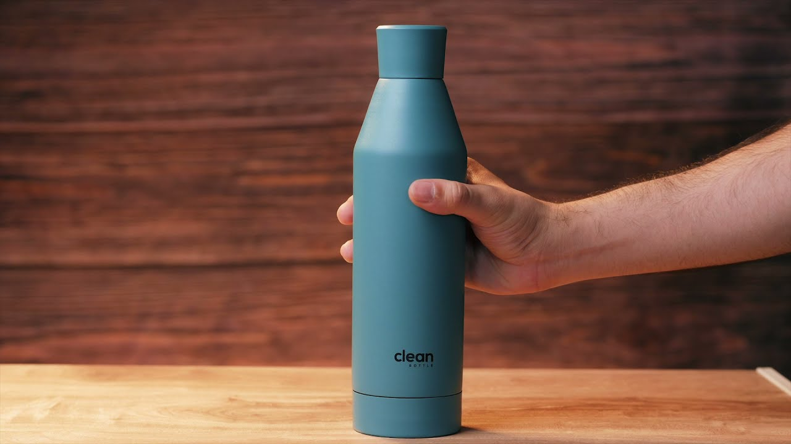

CASE STUDY BETWEEN ON GOOGLE LENS AND MOBILENET
GOOGLE LENS
VS
MobileNet
- Test Image- 
- Test Image-
-
Test Image-

- Test Image-
Output on GOOGLE LENS - Bottle
Output on Mobilenet Model - Hair Spray
Result -
Google Lens is more Accurate
Output on GOOGLE LENS - Bookshelf
Output on Mobilenet Model - Bookcase
Result -
Google Lens is more Accurate
Output on GOOGLE LENS - Lamp
Output on Mobilenet Model - Table Lamp
Result - Mobilenet is more Accurate
Mobilenet is more Accurate
Output on GOOGLE LENS - Specs
Output on Mobilenet Model - Whistle
Result -
Google Lens is more Accurate
I have Tested 4 Images GOOGLE LENS Has Predicted 3 of Them More Accurately And MOBILENET Has Less Accurately So According to My Case Study GOOGLE LENS is More Accurate.
Developed By Ananya Sinha